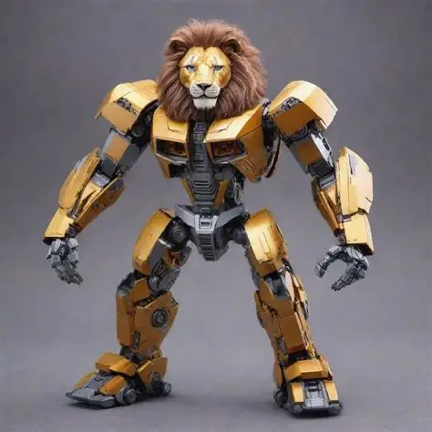

siron lion robotics El equipo de robótica Iron Lion 4977 es un equipo mexicano que participa en la competencia internacional FIRST Robotics Competition (FRC). Fue fundado en 2013 en colaboración con horno3, el Museo del Acero en Monterrey, Nuevo León, y oficialmente debutó en FRC en 2014. ([Iron Lion][1]) El equipo se caracteriza por combinar ingeniería, creatividad, programación, mecánica y trabajo en equipo para diseñar y construir robots de alto rendimiento que compiten en retos internacionales de robótica. Además de enfocarse en la competencia, Iron Lion busca inspirar a las nuevas generaciones en las áreas STEAM (Ciencia, Tecnología, Ingeniería, Arte y Matemáticas), promoviendo la innovación y el liderazgo juvenil. ([Iron Lion][1]) A lo largo de su trayectoria, el equipo ha conseguido reconocimientos importantes, como: * Premio “Rookie All Star” y “Rookie Inspiration” en su temporada debut 2014. * Capitán de alianza ganadora y clasificación al campeonato mundial en 2015. * Regreso oficial a FRC en la temporada 2025 con el reto “REEFSCAPE”. ([Iron Lion][2]) Actualmente, Iron Lion 4977 cuenta con el apoyo de patrocinadores industriales y tecnológicos como DEACERO, ArcelorMittal y John Deere, fortaleciendo el desarrollo técnico y profesional de sus integrantes. ([Iron Lion][2]) Si quieres, también puedo darte: * una versión más corta tipo “biografía del equipo”, * una descripción formal para exposiciones, * una descripción estilo CV/LinkedIn, * o una versión más inspiradora y juvenil para presentaciones.
